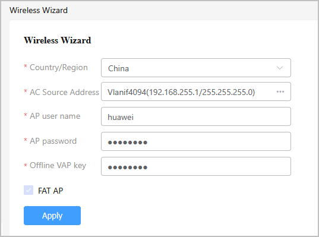
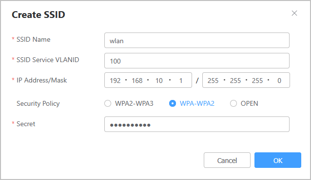

WLAN Configuration Wizard
Context
This section applies to AR routers that run V600R024C10 and later versions and contain W in the model name (for example, AR5710-S8T1XWE).
The WLAN configuration wizard helps you configure an AR as a Fat AP to provide WLAN functions.
Procedure
- Choose . The wireless configuration wizard is displayed, as shown in Figure 1.
- Configure the country/region. Set Country/Region based on the actual geographic information, as shown in Figure 2. For details about the parameter, see Table 1.
- Configure the AC source address.
- Configure the Fat AP function. If the device supports the Fat AP function, the FAT AP checkbox is selected by default. When configuring the device for the first time, you need to set the user name, password, and offline VAP key of the management AP, as shown in Figure 5. For details about the parameters, see Table 4.Figure 5 AP configuration wizard

Table 4 Management AP parameters Parameter
Description
AP user name
User name of the management AP. The value is a string of 4 to 31 characters. It can contain only letters, digits, and underscores (_), and must start with a letter.
AP password
Password of the management AP. The value is a string of 8 to 128 characters. The value must contain at least three of the following: lowercase letters, uppercase letters, digits, and special characters, excluding spaces and question marks (?).
Offline VAP key
Key for the offline management VAP. The value is a string of 8 to 63 characters and contains at least two of the following: uppercase letters (A to Z), lowercase letters (a to z), digits, and special characters.
- Configure wireless services.
- Choose and click Create in the Config Wireless Service area, as shown in Figure 6.
- On the Create SSID page that is displayed, configure the service VLAN of the SSID and click OK, as shown in Figure 7. For details about the parameters, see Table 5.Figure 7 Creating an SSID

- To modify an SSID, click the Modify icon in the Operation column in the Config Wireless Service area, as shown in Figure 8.
- To delete an SSID, select the SSID in the Config Wireless Service area and click the Delete icon in the Operation column, as shown in Figure 9. Note that deleting an SSID will disconnect online users and delete related configurations accordingly.
Table 5 Parameters for configuring wireless services Parameter
Description
SSID Name
The value is a string of 1 to 32 case-sensitive characters, without tab characters.
SSID Service VLANID
ID of the SSID service VLAN. The value is an integer from 1 to 4094.
IP/Mask
IPv4 address and mask of the service VLAN of the SSID, in dotted decimal notation.
Security Policy
Encryption mode of the WLAN. For security purposes, select WPA2-WPA3 or WPA-WPA2 which is secure.
The options include:
- WPA2-WPA3
- WPA-WPA2
- OPEN
Secret
This parameter needs to be set when Security Policy is set to WPA2-WPA3 or WPA-WPA2. The value is a string of 8 to 63 characters, and cannot contain double quotation marks and spaces at the same time. For security purposes, it is recommended that the value contain at least two of the following: uppercase letters (A-Z), lowercase letters (a-z), digits, and special characters.